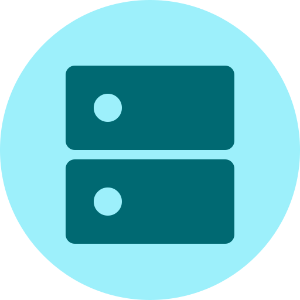

One IP per line. Helps the first connection before DNS is up.
Shown in Settings → VPN & Device Management
Reverse-DNS style, like com.example.dns. Blank creates one.
One per line. These skip encrypted DNS.
One network name per line
All optional. Blank fields use sensible defaults.

Secure DNS configuration profile generator for Apple devices.